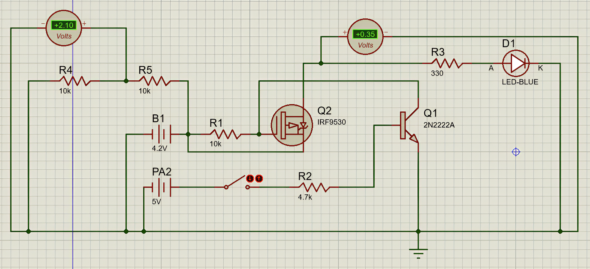

Jeong Been
Lee
Software Engineer
| Address | 294 Suyeong-ro Namgu, Busan, South Korea |
computar7@naver.com | |
| Mobile | +82 10 6664 9388 | ||
| GitHub | https://github.com/232JBJBJBJB |
LearnSpot / AR & AI Language Learning Platform

Image A1: 앱 메인 화면 (직관적인 UI/UX)
Image A1: アプリのメイン画面（直感的なUI/UX）
기획 배경 및 목적 (Why & For Whom)
Tech Stack
Swift (URLSession), iOS SDK, AWS EC2 (t3.micro), Amazon RDS (MySQL), OpenAI/Vision API
Key Roles & Implementation
- 프로젝트 리드: 초기 아이디어를 제안하고, 팀 내 만장일치로 기여도 1위 평가를 받으며 전체 아키텍처 설계 및 핵심 기능 구현을 주도.
- 클라우드 & 인프라: AWS EC2 서버 환경 구축 및 Amazon RDS(MySQL) 기반 데이터베이스 구축, Swift(URLSession/비동기) 기반 RESTful API 데이터 통신 구조 설계.
- 클라이언트 개발: Swift 기반 iOS 앱 구현, 카메라 및 AI 연동을 통한 직관적인 UI/UX 설계.
Core Achievements & Trouble Shooting
- 메모리 최적화 및 UI 안정화: AI 처리와 DB 연동 등 여러 처리가 겹쳐 아이폰의 한정된 메모리를 압박해 앱이 멈추는 문제가 발생. 비동기(async/await) 패턴을 실전적으로 도입해 메모리 점유율을 약 30% 이상 최적화하고 렌더링 끊김을 완벽히 차단함.
- 클라우드 리소스 효율화: AWS 백그라운드 리소스 누수를 식별하고 인프라 정책을 재조정하여, 불필요한 트래픽 과금을 50% 이상 방어(프리티어 한도 내 유지)하며 운영 비용 절감 및 시스템 안정성을 확보함.
Learned (배운 점)
AWS(EC2/RDS)를 활용해 직접 서버·DB 인프라를 구축·운영해보고, OpenAI/Vision API를 실제 서비스 흐름에 연동해 보며 백엔드 아키텍처와 AI 활용에 대한 실전 감각을 익혔습니다.
企画背景・目的 (Why & For Whom)
Tech Stack
Swift (URLSession), iOS SDK, AWS EC2 (t3.micro), Amazon RDS (MySQL), OpenAI/Vision API
Key Roles & Implementation
- プロジェクトリード: 初期アイデアを提案し、満場一致でチーム内貢献度1位の評価を獲得。全体の設計とコア機能の実装を主導。
- インフラ設計: AWS EC2サーバー構築、Amazon RDS (MySQL) データベース運用、Swift (URLSession/非同期) ベースのRESTful APIデータ通信構造の設計。
- クライアント開発: SwiftによるiOSアプリ開発。ARカメラとAI連携を取り入れた直感的なUI/UXを実装。
Core Achievements & Trouble Shooting
- メモリ最適化とUI安定化: 複数の処理（AI連携、DB通信など）が重なり、iPhoneの限られたメモリ（RAM）を圧迫してアプリが停止する問題が発生。非同期処理（async/await）を実践的に導入し、メモリ使用率を約30%以上最適化してレンダリングの遅延を完全に遮断。
- クラウドリソースの効率化: AWSのバックグラウンドリソースの漏れを特定し、インフラポリシーを再調整し、不要なトラフィック課金を50%以上防ぎ（無料枠内に維持）、運用コストの削減とシステム安定性を確保。
Learned (学んだこと)
AWS（EC2/RDS）を用いたインフラ構築・運用や、OpenAI/Vision APIの実サービスへの連携を通し、バックエンド構成とAI活用に関する実践的なスキルを習得しました。
Smart Solar Tracker / Hardware-Integrated Control Project
Video B1: 구동 영상
Video B1: 駆動動画

Image B2: 회로도 사진
Image B2: 回路図
기획 배경 및 목적 (Why & For Whom)
Tech Stack
C, Swift, P-MOSFET, MT3608, DS3231 (RTC), Bluetooth
Key Roles & Implementation
- 임베디드 제어: C 언어 기반 펌웨어 개발, DS3231(RTC) 및 블루투스 연동을 통한 실시간 데이터 처리.
- 클라이언트 개발: 하드웨어 상태 모니터링, 타이머 설정 및 원격 제어를 위한 전용 iOS 애플리케이션 개발.
- 하드웨어 설계: P-MOSFET 회로 보호 및 전력 관리 모듈을 포함한 전체 회로 구축 참여.
Core Achievements & Trouble Shooting
- 소통을 통한 원인 규명: 개발 중 오류 원인이 하드웨어인지 소프트웨어인지 판별하기 어려운 벽에 부딪힘. 하드웨어 담당 멤버와 부품별로 계획을 세워 하나씩 교차 검증하는 협업을 통해, 제약이 많은 환경에서도 완벽히 동작하도록 C 언어 코드를 최적화함.
- 안정성 극대화: 모터 구동 시 발생하는 역전류 문제를 기획 단계부터 P-MOSFET 회로 설계로 원천 차단하여, 구동 중 시스템 다운 0회의 무중단 안정성을 확보. 또한, 블루투스 통신 패킷 손실을 최소화하는 구조를 설계하여 99% 이상의 통신 성공률과 0.5초 이내의 빠른 반응 속도를 구현함.
Learned (배운 점)
C언어 기반의 임베디드 제어와 전원 회로 특성을 이해하게 되었으며, 블루투스 통신 연동 및 하드웨어와 앱 간의 데이터 동기화 메커니즘을 직접 구현해 보며 시스템 통합 능력을 키웠습니다.
企画背景・目的 (Why & For Whom)
Tech Stack
C, Swift, P-MOSFET, MT3608, DS3231 (RTC), Bluetooth
Key Roles & Implementation
- 組み込み制御: C言語によるファームウェア開発。DS3231(RTC)とBluetoothモジュールを活用したリアルタイムデータ処理。
- クライアント開発: ハードウェアの稼働状況モニタリング、タイマー設定、遠隔操作を可能にする専用iOSアプリの開発。
- ハードウェア設計: P-MOSFETによる回路保護および電力管理モジュールを含む全体回路の構築。
Core Achievements & Trouble Shooting
- チーム連携による課題解決: 不具合の原因がハードかソフトか判別しにくい壁に直面。ハードウェア担当のメンバーと部品ごとに計画を立て、一つひとつ検証を繰り返すことで、制約の多い環境でも問題なく動作するようC言語のコードを最適化。
- 安定性の極大化: モーター駆動時の逆電流問題を設計段階からP-MOSFET回路で源泉遮断し、稼働中のシステムダウン0回の無中断の安定性を確保。また、Bluetooth通信のパケット損失を最小限に抑える構造を設計し、99%以上の通信成功率と0.5秒以内の高速レスポンスを実現。
Learned (学んだこと)
C言語による組み込み制御や電源回路の特性を理解し、Bluetooth通信およびハードウェアとアプリ間のデータ同期メカニズムを実装することで、システム統合力を身につけました。